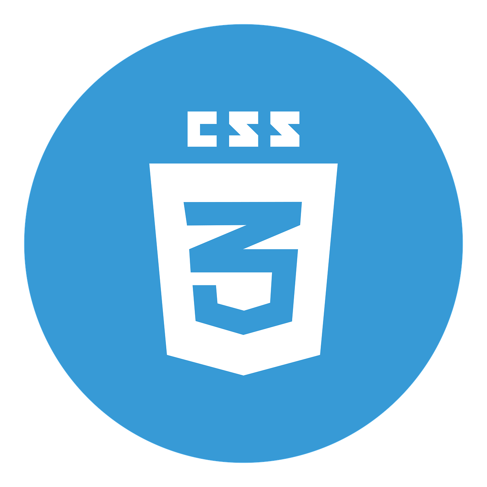
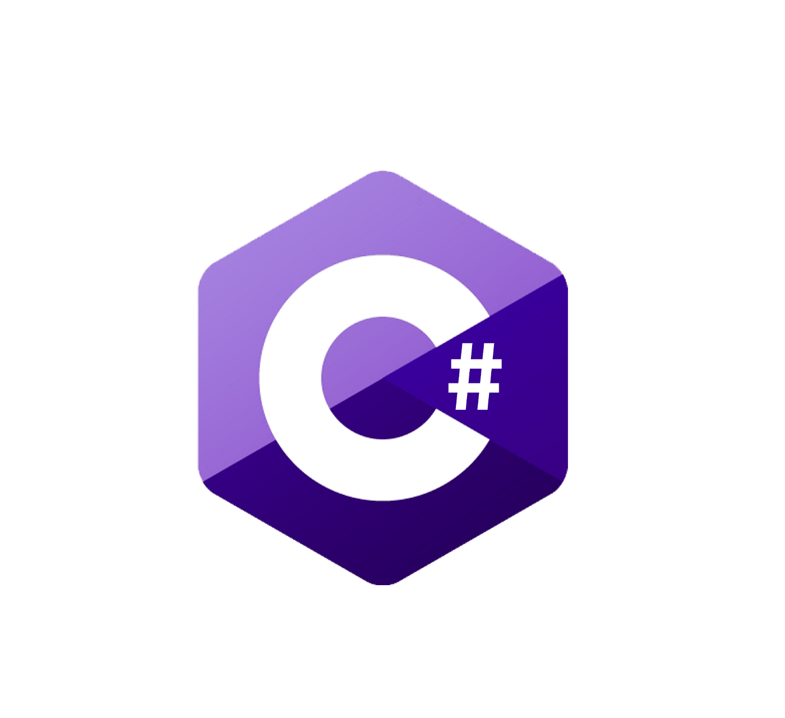
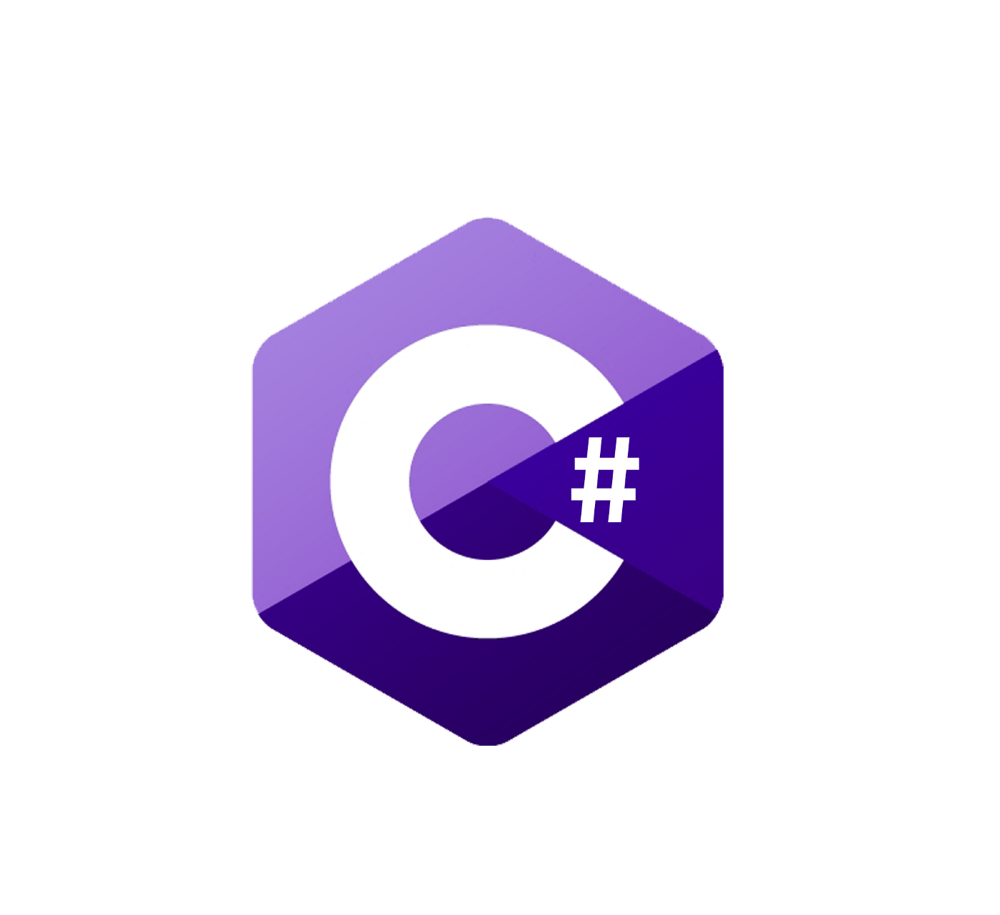

Experiences & Skills
IT Engineer Intern
TAMUK Office of Student Access (05/2021 - 08/2021)
Organized and participated in STEM & Computer Science focused workshops that benefit high school and college students in South Texas. This also incuded setting up, maintaining, and taking inventory of high-end computing devices used for educational virtual reality purposes. I had the pleasure of configuring minicomputers, such as raspberry pi, and microcontrollers like Arduino for research and workshop related purposes. Finally, I used ticketing systems to manage and process support actions and requests.


 
